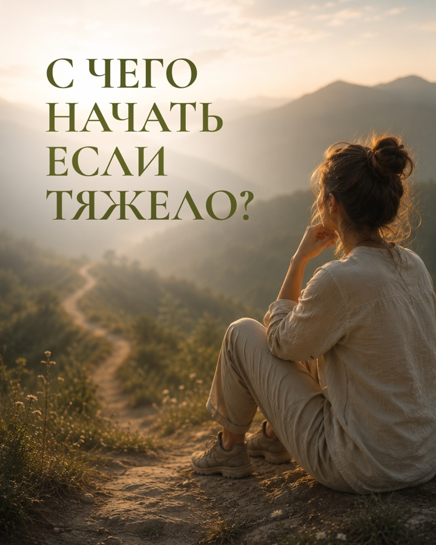

Экспертный wellness-проект · мягкий перезапуск
Как с нуля собрать смысл и тёплый визуальный язык
У проекта не было готовых цветов, шрифтов и системы. Мы начали с позиции эксперта, сделали тексты теплее, связали знакомство, личные темы и продукт — и собрали цельный месяц контента.
Полный комплект из 10 публикаций и 5 сторис утверждён клиентом и передан на этап публикации.
На сайте показываем 6 нейтральных постов и все истории. Ещё 4 поста оставлены вне публичной галереи до проверки медицинских формулировок.



Точка старта
Новый проект был идеей — стал целой системой
На старте не было готового фирменного стиля. Нужно было сохранить взрослый, бережный тон и при этом сделать продукт понятным для нового человека.
Что требовалось собрать
- позицию и характер нового проекта;
- рубрики на первый месяц;
- тёплые тексты без канцелярского тона;
- узнаваемый визуал без готового брендбука;
- путь от знакомства к клубу и консультации.
Как построили коммуникацию
Сначала знакомим с человеком и проектом. Затем поднимаем узнаваемые состояния и личную позицию. После доверия показываем закрытый клуб и мягко переводим к разговору.
Логика: познакомиться → узнать себя → почувствовать доверие → понять подход → сделать первый шаг.
Польза
Саморефлексия и понятные ориентиры без обещаний результата.
Личное
Выбор пути и позиция эксперта.
Вовлечение
Вопросы, в которых аудитория узнаёт себя.
Продукт
Закрытый клуб и личная консультация.
Разбор
Мягкое объяснение распространённого представления.
Визуальная система с нуля
Тёплый, взрослый и спокойный образ
Оливковые, кремовые и золотистые оттенки, крупная антиквенная типографика, естественный свет и спокойные lifestyle-сцены.
Не шаблонная лента
Портрет, природа, предметные сцены и типографика меняются под смысл, сохраняя единое настроение.
Тексты стали теплее
После первого круга правок убрали дистанцию и добавили больше живой интонации.
Клиент утвердил
Есть прямая положительная реакция на стиль. После неё комплект перевели на этап публикации.
Работы проекта
План, 6 нейтральных публикаций и все 5 сторис
В проекте 10 публикаций; в открытой галерее показаны 6 публикаций и все 5 сторис без медицинских обещаний.
10 публикаций · 5 ролей
От перезапуска к продукту
Контент подготовлен для ВКонтакте, Telegram и MAX.
- Знакомство с Ольгой и новым проектомЛичная публикация · доверие
- Экспертная польза и саморефлексияПомочь узнать своё состояние без диагноза
- Разбор распространённого представленияОбъяснение · требует редакционной осторожности
- Анонс закрытого клубаПродукт · мягкое предложение
- Экспертная темаПольза · экспертная тема
- Почему я выбрала сложную темуЛичная позиция · доверие
- Экспертная темаПольза · экспертная тема
- Вы держите всё на себе?Вовлечение · узнавание себя
- С чего начать, если тяжелоКонсультация · первый шаг
6 публикаций после редакционного отбора
Знакомство, позиция, продукт и первый шаг
Нажмите на макет, чтобы открыть его без обрезки.
Один мини-прогрев · 5 экранов
От жизни на автопилоте к анонсу клуба
Серия поднимает знакомое ощущение, усиливает узнавание и только после этого показывает следующий шаг.
Результат проекта
Утверждённый контент для экспертного проекта
На странице видны контент‑система, качество текстов, дизайн и утверждённая версия комплекта.
Что сделали
- разработка системы с нуля;
- 10 публикаций и 5 сторис;
- утверждение текстов и визуала;
- прямая положительная реакция клиента;
- передача комплекта на этап публикации;
- 11 материалов в открытой галерее.
Итог проекта
Кейс показывает утверждённый комплект. Коммерческие показатели не измерялись; контент не заменяет медицинскую помощь.
Запускаете экспертный проект?
Соберём не только визуал, а цельный путь к продукту
10 постов с маркетинговым планом, текстами и дизайном — от 4 990 ₽.